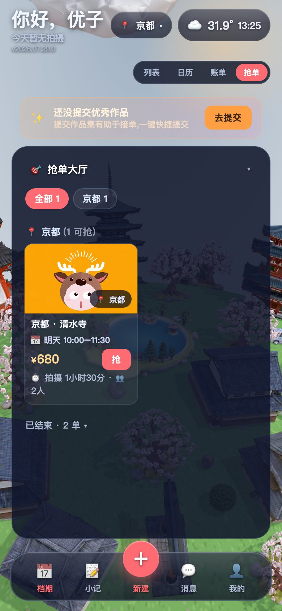
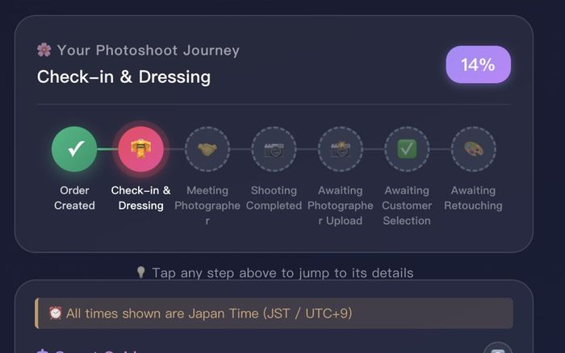
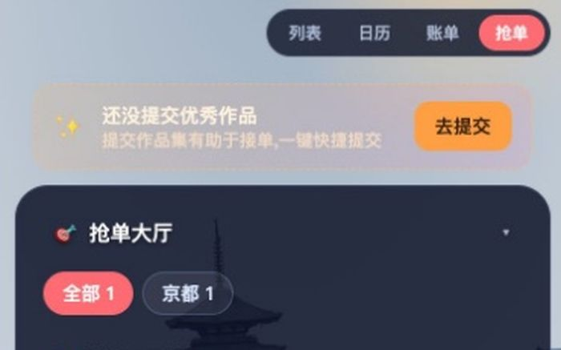
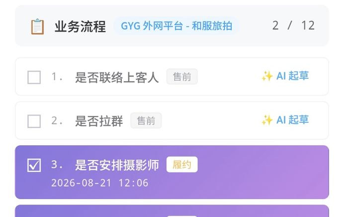
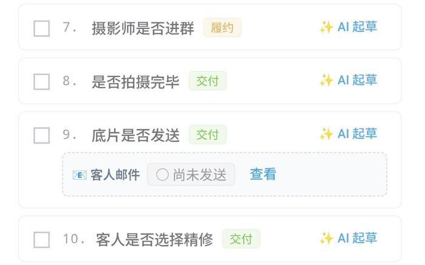
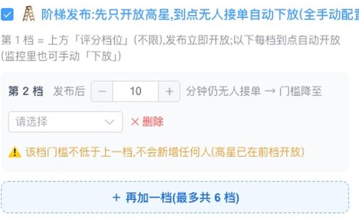
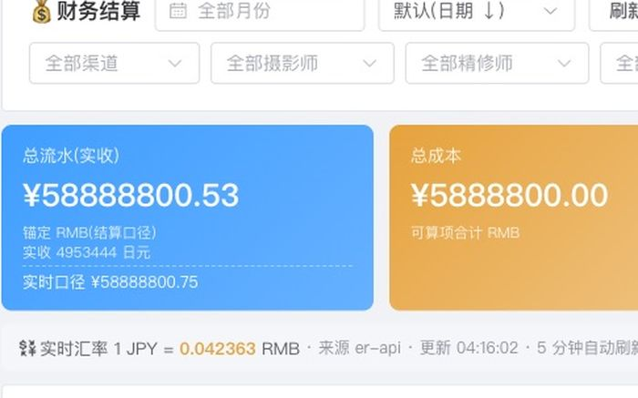
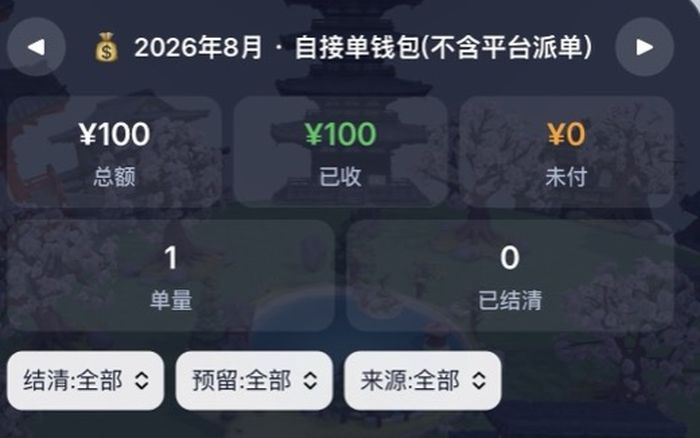
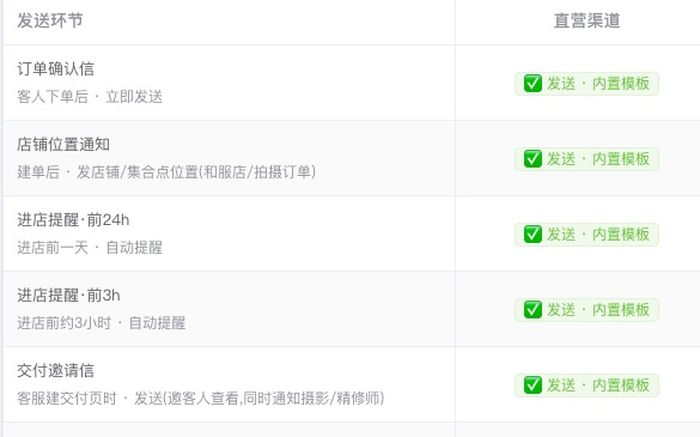
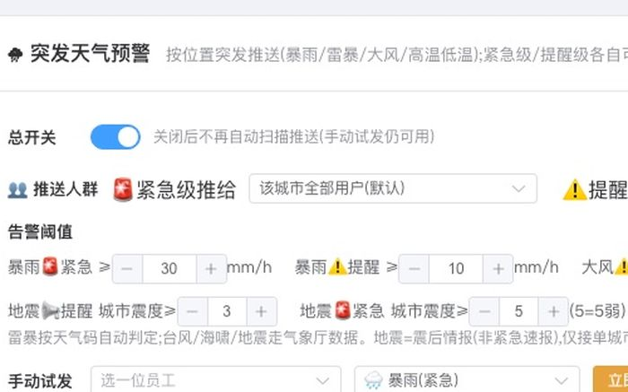

三个角色互相牵制
将 AI 拆分为两个角色,与创始人共同构成三方:一个只输出调研方案、不接触代码;
展开细节
一个只在批准范围内实施、接触不到生产环境;生产环境仅创始人可操作。每段工作固定走调研 → 实施 → 审计,动手前先只读查清现状。
产品作品集 · 0 → 1 独立交付
一套面向在日旅拍业务的自动化调度系统。订单从多个渠道接入后,从派单、履约提醒到作品交付与月度结算均由系统衔接,客服与摄影师的日常工作都在其中完成
各板块均可点击进入 ↓

榴档期 App 摄影师端应用。档期登记、接单、作品上传与报酬查询都在手机上完成;订单先到先得,报酬在抢单前即公示。 进入 →其余章节


项目介绍与概览 旅拍业务的基本形态,以及履约环节的结构性难点。不熟悉该行业可从本章读起。 进入 →

全景与目录 一条订单从下单到结算所经过的角色与环节。 进入 →
模式优势 同一件事,人工模式下需要专人持续跟进;本章说明系统化之后为何不再需要,以及减少的是哪几个必须有人在场的位置。 进入 →

数字与口径 站内每个数字的算法与统计范围;尚未回生产库核验的项目一并标出。 进入 →

如何交付 无研发团队的条件下,一套生产系统的交付方式与运行保障。 进入 →项目介绍
本章先界定业务本身与履约难点,作为后续各章的背景。
客人来日本旅行,想在当地约摄影师拍一组照片——这行叫旅拍。
难点在协调:订单来自多个平台,摄影师分散各城市且多为兼职,人工模式下全靠客服逐个询问。
本系统将这段协调交由程序执行,总控台、App 与客人交付页各负责一段。
静态分镜(系统已关闭动效)
传统:每一步都要问人;本系统:一条链接自助走完。
静态分镜(系统已关闭动效)
传统:41 分钟仍无着落;本系统:一次推送,中位数 2.0 分钟成交。
两部演示由站内真实截图驱动,各约 14 秒无缝循环,右上角可暂停。
传统模式的代价
传统派单由客服逐个私聊:询问一人、等待一次回复,回复后还需核对档期。摄影师人数越多,客服越成为瓶颈;该瓶颈无法通过加班解决。
74.7% 的派单任务,客服只做一个动作——发布。其余由摄影师自行抢单完成,派单不再计入客服工作量,而成为系统吞吐量。
概览 · 抢单派发监控(进行中 / 超时)
传统模式的代价
传统模式的等待过程:本页派单调度屏的示意时间轴中,8 分钟未回复,23 分钟档期冲突,41 分钟仍在等待。
一半的订单 2 分钟内被接走。并非倍数级提速,而是将「等待回复」这一环节从流程中移除。
概览 · 历史抢单记录(含发起与抢到时间)
传统模式的代价
传统模式没人接就要再问一轮,每一轮都是客服的时间,轮次不可控。
96% 的成交单由一次推送完成。二次触达在本系统中属异常情形,而非常态。
导览
各渠道订单一律先进入运营总控台,再由此派给摄影师、分享给客人。系统中不存在第二个建单入口。
这是什么
旅拍订单从进单到结算全程自动流转的业务系统,由三个端组成
给谁用
中小型旅拍工作室,以及无坐班团队却要跨城市交付的经营者
解决什么
把压在负责人身上的问档期、派活、催交付、算账交由系统完成
同一份数据,两个视角:谁看到什么由角色权限决定,不由设备决定。摄影师看得到时间、地点、时长与报酬,看不到客人隐私与订单金额。
全景与目录 · 总控台与 App 同屏对照
一个人盯几十个单和几十个人,全靠记忆与聊天记录。
一个后台看全,派单与结算自动跑。
被动等派单,不知有哪些活、报酬多少。
手机上自己看单自己抢,收入可查。
任务从聊天里来,链接与要求散落各处。
任务自动派发,交付页上一站完成。
拍完了不知道进度,反复问客服。
免登录进度页,填编号提交精修与验收。
下面这条线是整个系统的主干,也是这个页面的目录。点哪一步,跳哪一章。
管理端 榴档期 App 客人 标「自动」= 这一步系统自己跑
核心主线 · 一
工作室的日常业务集中在这一个后台完成。除接单与派单外,月度对每位摄影师的应付金额亦由此处的结算数据生成。
旅拍的难点集中在履约环节而非获客。订单来自多个渠道,摄影师分散各地、不坐班,也不会持续关注后台。
整段订单文本粘贴进来,AI 自动解析成表单字段,人工核对后保存。
传统模式
需开 3 个工具 ｜ 沟通轮次不可控 ｜ 300 单规模需 3 人
榴档期
全程 2–4 分钟 ｜ 一个界面完成 ｜ 300 单规模仅需 1 人
总控台 · 建单 · 订单文本解析界面
订单管理页(订单表与 AI 紧急看板)
总控台订单列表页
订单从进系统那一刻起,到完结为止,每一步都留了痕。
非结构化文本进,结构化字段出,人只做核对
把「客服逐个打电话问谁能接」变成「一次推送、先到先得」。
74.7%抢单成交率2.0 分钟接单时长中位数32.9%上线两个月的承接占比口径见数字与口径 →
传统:逐个私聊,串行等待
沟通量随人数线性增长,客服成为瓶颈
本系统:一次推送,并行竞抢
2 分钟成交 · 并发保证恰好一人成功
沟通量与人数无关,客服只需发布一次
总控台 · 派单 · 评分梯队「阶梯发布」配置弹窗
总控台 · 派单 · 历史抢单记录 · 状态列
总控台 · 派单 · 发起抢单弹窗
总控台建单时就生成了这条订单的客人免登录链接;
四棒在同一张页面上交接,每步自动通知下一棒并回写进度,客服退出中转链路。
总控台 · 交付 · 客人交付页 · 六步进度(真机)
续屏
总控台 · 交付 · 客人选片界面
总控台 · 交付 · 客人选片界面 · 续屏
总控台 · 交付 · 交付进度页
总控台 · 交付 · 订单进度节点模板
抢单公示价直接进结算,无人转录。
总控台 · 结算与其他 · 结算中心报表
成本归成本,毛利归毛利,奖励和应付各有各的去处,算得清也改不动。
取价按六级优先级从高往低找——取到就停
以下五项不单独成章,每项一行说明;点击缩略图可查看真实界面。
总控台 · 结算与其他 · 邮件模板管理页
客人收到的订单确认信 · 上半
订单确认信 · 下半(集合点与进度链接)
总控台 · 结算与其他 · AI 紧急看板
总控台 · 结算与其他 · 摄影师档案页
总控台 · 结算与其他 · 推送模板中心
推送文案模板列表
总控台 · 结算与其他 · 突发天气预警配置(五灾种阈值)
📱 摄影师端是另一条主线——填档期、抢单、传作品、收预警,看 App 主线 →
核心主线 · 二
报酬在卡片正面公示,先到先得。上线两个月,三分之一的派单量由摄影师主动接走。
同类排班接单工具默认任务由管理端分配,工具只负责通知与记录,摄影师始终是被安排的一方。
本 App 的设计相反:登记档期方具备接单资格,未达门槛的灰卡同样可见。
榴档期 App · 档期日历 · 日期格自带天气
榴档期 App · 抢单大厅列表,报酬前置
填了档期才进候选池,不填收不到任何单;
App · 档期 · 档期填报页
报酬、城市、日期、时长、集合点全部前置,点击即抢;
未达门槛的订单同样以灰卡显示,门槛标注在卡片上;指定给他人的定向单不进入大厅。
App · 抢单大厅 · 大厅列表页,报酬前置
未点名的定向单灰态卡(已回退)
定向单详情页(已回退)
已结束灰卡与评分门槛
灰卡详情 · 按钮为「已被安排」
「定向单全员可见」是 v8.6 的有意设计,业主拍板后连同理由一并写入服务端注释留档。该设计在生产环境运行二十四天,暴露出三类问题:非候选者会收到一个点击后必然被拒的「抢」按钮、已结束的订单仍向全体下发定向标记、梯队尚未解锁的候选人已可读取客人备注。v9.1 仅收窄可见性判据一处,抢单硬闸与推送受众未作改动。
急单走独立高优先通道(带声音震动);
App · 推送与预警 · 急单推送通知
档期日历 · 日期格自带天气
总控台一侧对应的是推送体系与气象与安全预警两块能力——文案模板、深链落点、灾种阈值都在那里配置,见运营总控台 →
每个订单在抢单前即显示报酬,接单与收入记录可随时查询。
App · 收入与作品 · 个人收入账单页
优秀作品提交与审核记录
自注册资料页
免注册长效登录:专属链接直达,不用记密码,长期不掉线。
版本自动感知:有新版本自动提示,更新不需要重新发版。
App · 收入与作品 · 专属链接免注册进入首屏
摄影师端 iOS 已上架 App Store
对比
差别不在单步效率,而在整条流程中「必须有人盯着」的位置减少。
下表左栏为该业务在无系统条件下的真实运转方式:微信群 + Excel + 客服的记忆。
传统模式人工介入 ≈ 15 次/单
榴档期人工介入 ≈ 4 次/单
实心 = 仍需人操作 空心 = 该动作已由系统自动完成
模式优势 · 客人选片界面
客人选片界面 · 续屏
口径
下表列出每个数字的算法与统计范围;尚未回生产库核验的项目按原样标注。
全站正文里出现的数字都指向这张表。
核验状态:上表六项的分子分母排除项、统计窗口起止、再推场次界定、已取消 / 已退款订单是否计入、去重 SQL 口径,均尚未回生产库逐条核对,先如实标出,不做四舍五入式的省略。
数字与口径 · 抢单派发监控(进行中 / 超时)
历史抢单记录(含发起与抢到时间)
传统模式的代价
作品集中的系统多停留在演示阶段;演示与生产系统之间,隔着全部工程难度。
481 笔真实订单、双渠道、横跨 2026.05–08 四个自然月——承载真实交易的生产系统,而非演示环境。
该数字的完整口径见本章上方「统计口径与核验状态」。
数字与口径 · 订单总览统计
传统模式的代价
单城市履约尚可依靠人工盯守;城市数量增加后,微信群与个人记忆随即失效。
9 个城市与地区同时调度,由单人运营。调度规则存于系统,不依赖个人记忆。
该数字的完整口径见本章上方「统计口径与核验状态」。
数字与口径 · 拍摄地点管理页
方法
依靠一套固定流程。AI 的输出质量并不稳定,需要流程本身提供约束。
本项目没有研发团队,工程实现由创始人与 AI 结对完成。其中的关键并不是"让 AI 写代码"。
将 AI 拆分为两个角色,与创始人共同构成三方:一个只输出调研方案、不接触代码;
一个只在批准范围内实施、接触不到生产环境;生产环境仅创始人可操作。每段工作固定走调研 → 实施 → 审计,动手前先只读查清现状。
每次部署是一条串联命令链,任何一环失败即中断。
双备份、检查结构变更、切版本、校验版本号、确认服务器无意外改动、重启,最后用"进程运行时长小于 30 秒"证明它真的重启了。
任何"应该生效了"的说法一律不采信,唯一算数的是终端中的原始回显——改动前后的实际输出不一致,即视为未生效。
声称修好了要给出改动前后的对照证据;每份产出末尾写清哪些是实测、哪些是推断、哪些没覆盖。
该流程的作用,是把 AI 这类执行者置于可验证的约束之内,以机制而非运气保证结果。
三个半月交付 12 个业务模块、86 张生产在用数据表、437 个接口,并持续承载真实业务